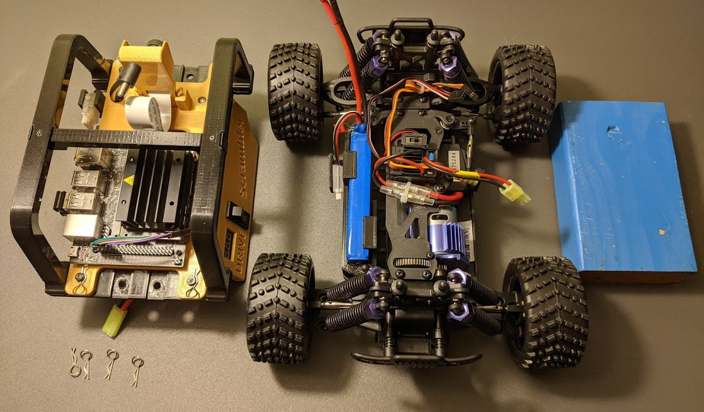
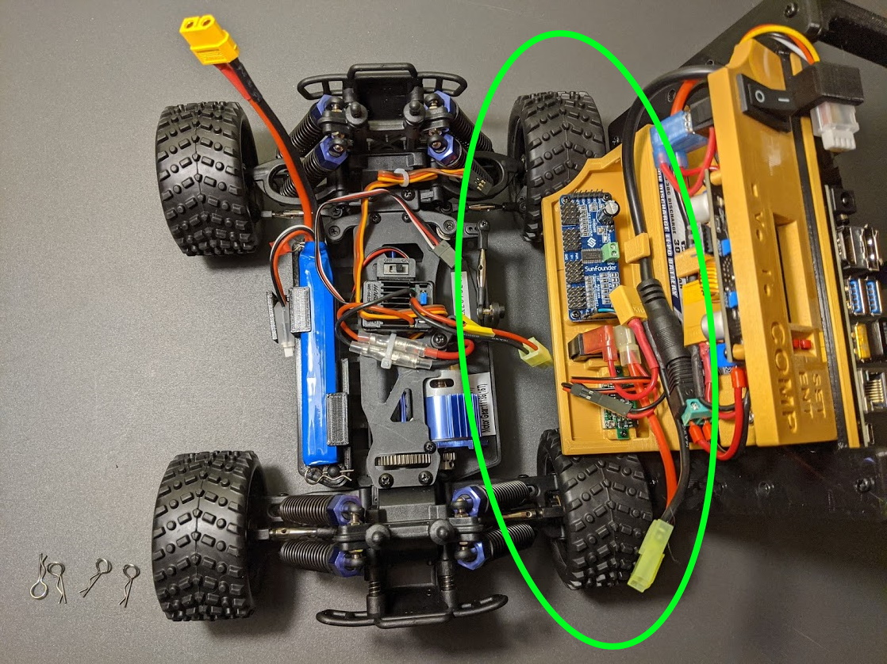
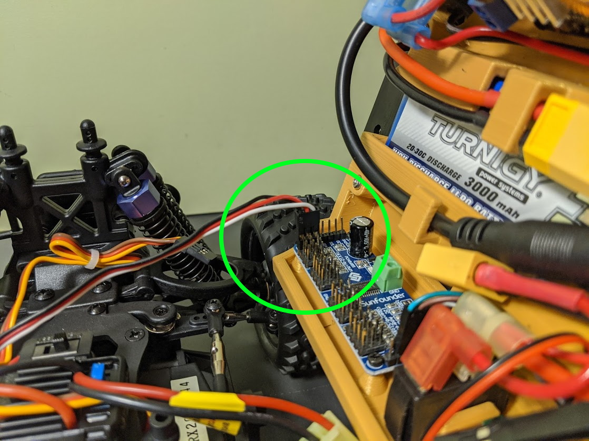
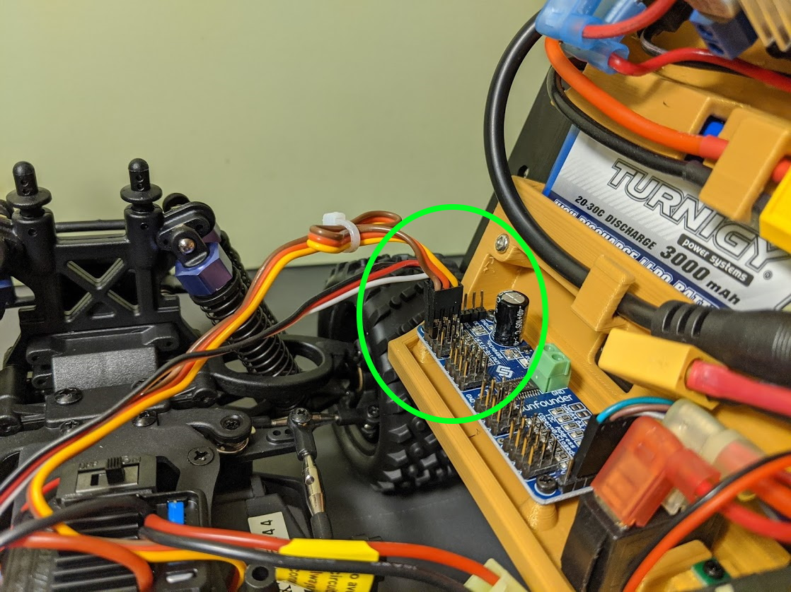
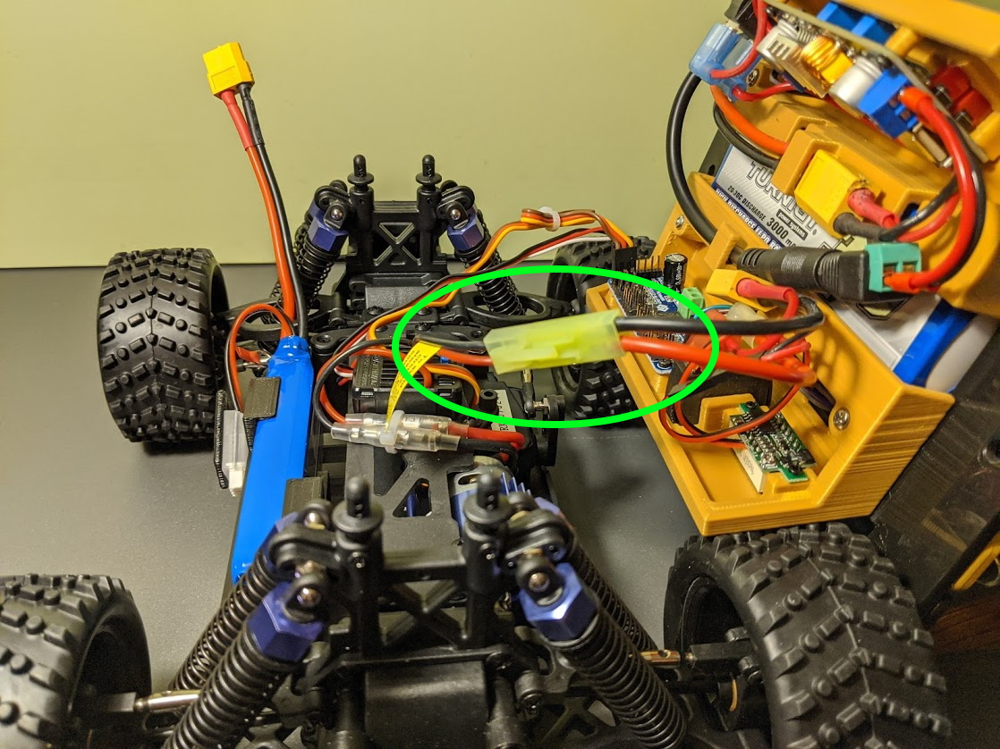
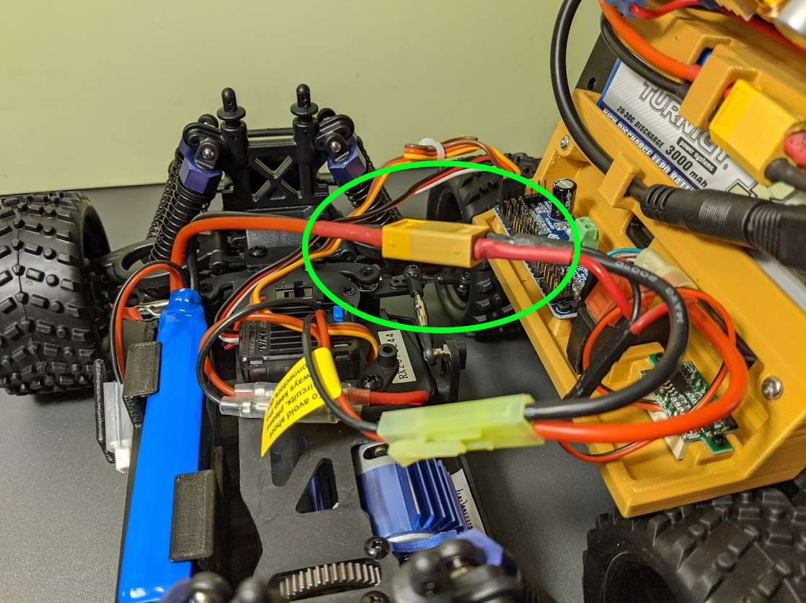
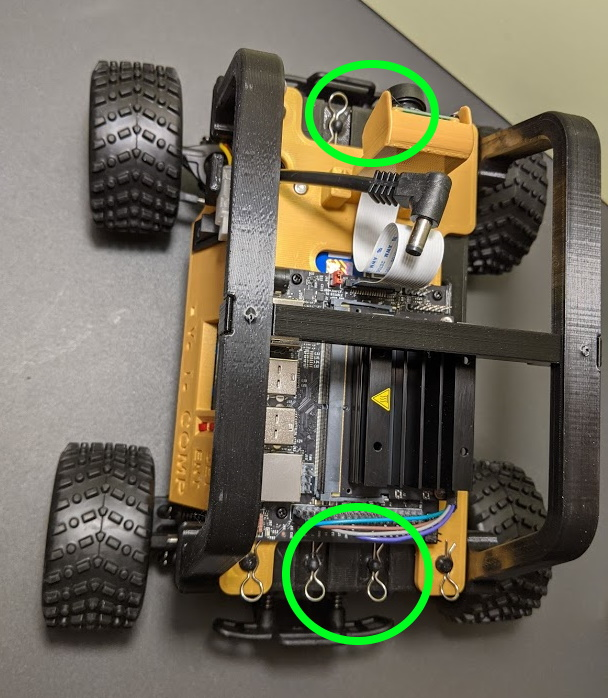

Connecting Car Top to Chassis
The car top contains the bulk of the electronics. Only a few connections are needed before securing to the chassis.
To aid in the connection process, a small 2x4 is handy to support the car top.

Connect PWM Wires
- Position the car top on the right tires and block of wood as shown.

- Connect the drive motor control wires to PWM Port 0. This is the 3-wire cable that is white/red/black. The black lead (gnd) goes to the outside edge of the circuit board.

- Connect the steering servo cable (yellow/orange/brown) to PWM Port 1. The brown lead (gnd) connects to the outside edge of the circuit board.

Connect Power Wires
- Connect the motor controller power lead (mini tamiya connector) to the right car panel.

- Connect the Drive Battery (XT-60 connector) to the right control panel.

Mount Top to Chassis
- Carfully roll car top over and position any hanging wires to the center of the car.
- Insert car top on chassis mounting posts.
- Secure with four bent clips.
